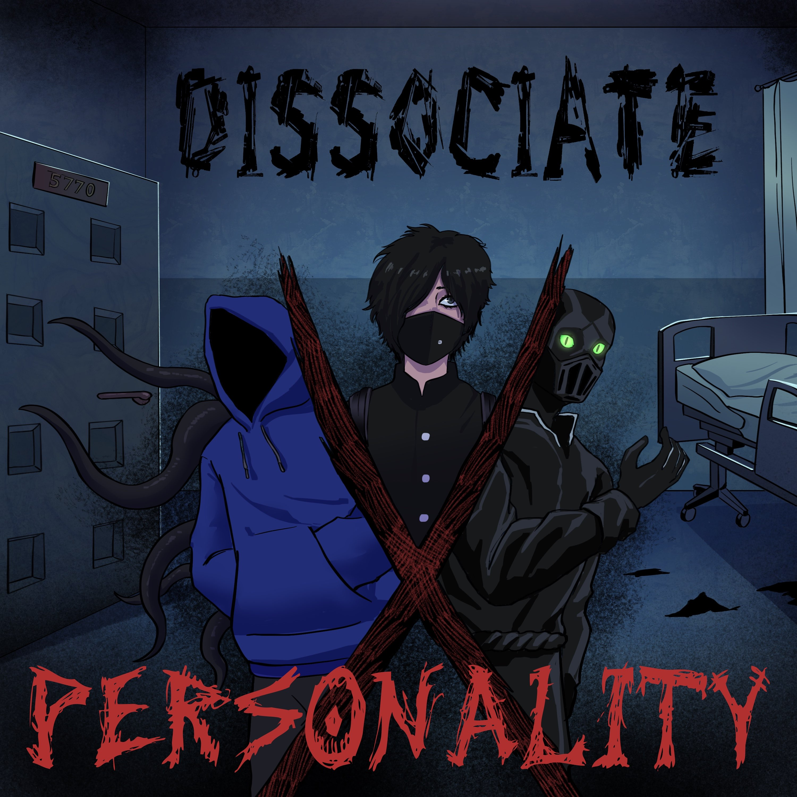

Dissociate Personality
A personal FNF Mod that was in the works for about a year that expanded the limitations of HaxeFlixel. bringing unique mechanics, as point and click exploration, note logging, interigation, window manipulation, pushing the line of possible maleware and a silly little game. Ultimately this was cancelled due to the lack of motivation brought by the team and lack of development over a large periods of time.
Scrapped